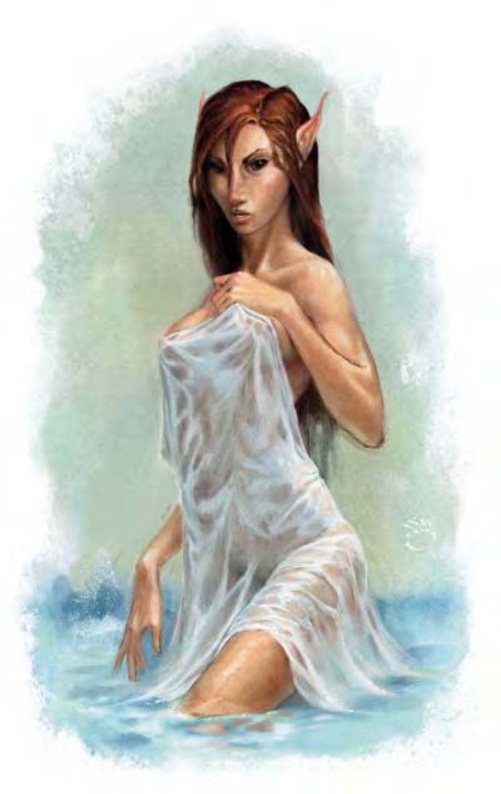

她的美貌无法以言语形容，撩人之处正是其危险的原因。她拥有红棕色的长发、完美无瑕的肌肤、水汪汪的大眼睛及伏贴向后的长耳朵。
水妖精是肉体之美的天然化身，也是旷野里圣地的守护者。她们可爱到即使是匆匆一瞥，都可让人心醉目盲。水妖精痛恨邪恶，以及那些以任何理由破坏自然环境的生物。
水妖精的性情狂野多变，一如大自然本身，同时具备了极致美景与恶地险境。她可以温柔慈悲地面对崇近自然的凡人，但遇上不知节制、过度滥用自然资源的家伙，她也会二话不说地给予痛击。各种生物族群在水妖精前平和共处，摒弃宿敌成见。受伤的野兽们都知道水妖精会照料��们的伤势。
水妖精的身高体重与人类相同。
水妖精通晓木族语与通用语。
水妖精通常避免与非精类生物接触。她们都有所需保护的圣地，可能是果林、水池、丘陵或山峰。水妖精利用法术及动物盟友来驱赶入侵者，并倾向先进行非致死攻击，除非遇上邪恶或以致死攻击响应的敌人。
水妖精很容易对精灵、半精灵、德鲁伊及天性视为朋友的生物产生好感。她们愿意在赶走这些生物前，先听听他们的解释。据说水妖精亦会协助善良阵营的英雄们，只要这些英雄对她们展现出礼貌与敬意。
夺目美貌 (超自然)：离水妖精30英尺内所有人形生物都会受到影响。直视水妖精的生物必须通过强韧检定 (DC=17)，否则会永久失明，一如「目盲术」效果。水妖精可随时压抑或重启此能力，视为即时动作。豁免检定DC的调整值与魅力调整值相同。
类法术能力：每天1次――「任意门」。施法者等级7。
法术：水妖精施法时视同7级德鲁伊。
一般已准备德鲁伊法术：(6/5/4/3/1；豁免检定DC=13+法术等级)：
零级――「治疗小伤」、「侦测魔法」、「闪光术」、「神导术」、「光亮术」、「提升抗力」；
一级――「安抚动物」、「治疗轻伤」、「纠缠术」、「神行术」、「动物交谈」；
二级――「树肤术」、「灼热金属」、「次级复原术」、「树化术」；
三级――「召雷术」、「治疗中度伤」、「防护能量伤害」；
四级――「锈蚀爪」。
震慑回眸 (超自然)：愤怒的水妖精一眼就可让生物震慑，此能力属于标准动作。目标生物必须通过强韧检定 (DC=17)，否则被震慑2d4轮。豁免检定DC的调整值与魅力调整值相同。
体魄魅态 (超自然)：水妖精可将魅力调整值加到所有豁免检定上，防御等级则获得等量的偏斜加值 (已列于数据域位中)。
理解动物 (特异)：与德鲁伊的同名职业特性相同，但水妖精在检定时具有+6种族加值。
技能：水妖精在进行任何特殊动作或闪身避祸时，「游泳」检定具有+8种族加值。即使分心或受困，他们在进行「游泳」检定时都可以随时取10。若以直线前进，则可在游泳时进行奔跑动作。
| 生命骰 | 6d6+6 (27HP) |
| 先攻 | +3 |
| 速度 | 30英尺 (6格)、游泳20英尺 |
| 防御等级 | 17 (+3敏捷、+4偏斜)、接触17、措手不及14 |
| 基本攻击/擒抱 | +3 / +3 |
| 攻击 | 匕首+6近战 (1d4/19-20) |
| 全力攻击 | 匕首+6近战 (1d4/19-20) |
| 占据/触及 | 5英尺 / 5英尺 |
| 特殊攻击 | 夺目美貌、法术、类法术能力、震慑回眸 |
| 特殊能力 | 伤害减免10/寒铁、昏暗视觉、体魄魅态、理解动物 |
| 豁免 | 强韧+7、反射+12、意志+12 |
| 属性 | 力量10、敏捷17、体质12、智力16、感知17、魅力19 |
| 技能 | 专注+10、交涉+6、脱逃+12、驯养动物+13、医疗+12、躲藏+12、聆听+12、潜行+12、骑术+5、察言观色+12、侦察+12、游泳+8、绳技+3 (捆缚+5) |
| 专长 | 战斗施法、闪避、武器娴熟 |
| 环境 | 温带森林 |
| 组织 | 单独 |
| 宝藏 | 标准 |
| 阵营 | 通常混乱善良 |
| 进化 | 7-12HD (中型) |
| 等级修正值 | +7 |